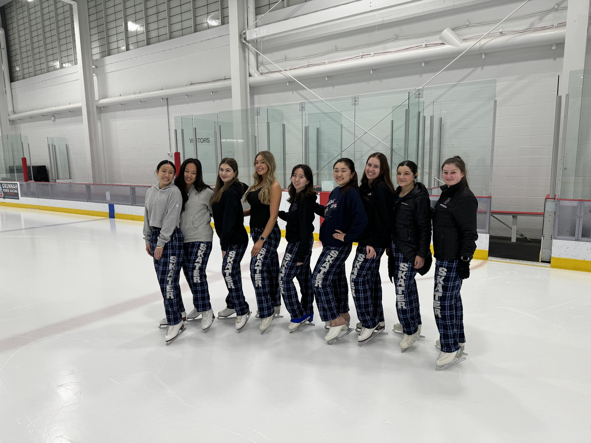
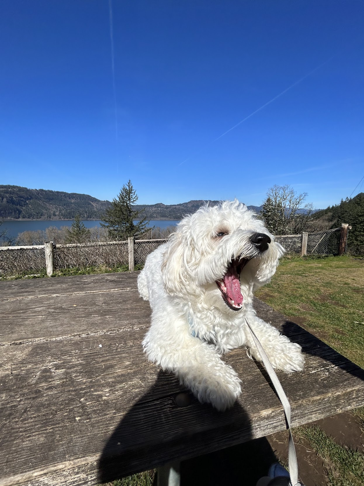

Personal

I've been skating competitively since I was five and love the combination of artistry and athleticism. I skated with The Purple Line, Northwestern's synchronized skating team, where I found some of my best friends and had a blast skating, traveling, and competing.
In a highly abstract (but, I think, nontrivial) way, being on the team helped me understand ideas like coordination and consensus on a visceral level. As a single skater I can only be aware of what's immediately around me and what I'm feeling from my neighbors, all while trying to avoid wiping the ice with my face — and yet the team as a whole has to arrive at a particular shape or formation.
The way local, decentralized awareness aggregates into coordinated global patterns has deepened my appreciation for how distributed systems achieve collective goals, which has percolated into my research interests in multi-agent systems and, more broadly, collective intelligence.
As a born-and-raised Oregonian, I love exploring the outdoors, especially with my favorite hiking buddy: my dog Bear. Living in Illinois (which, in addition to being home to the 2nd best type of pizza in the country, is also the 2nd flattest state in the country) put me in a bit of a hiking rut, though I did my best with Evanston's uniquely charming topographical offerings — like Mt. Trashmore, a 65-foot-tall landfill two miles from campus that turns out to be quite useful for winter sledding.
I also read about mathematics, science, and history whenever I can make the time. Some favorites: Fermat's Enigma by Simon Singh, Shape by Jordan Ellenberg, and Chaos by James Gleick. Please send recommendations!
